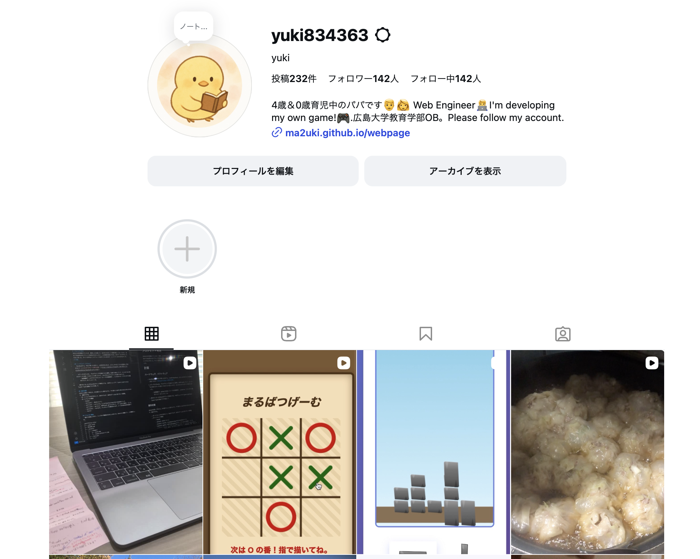
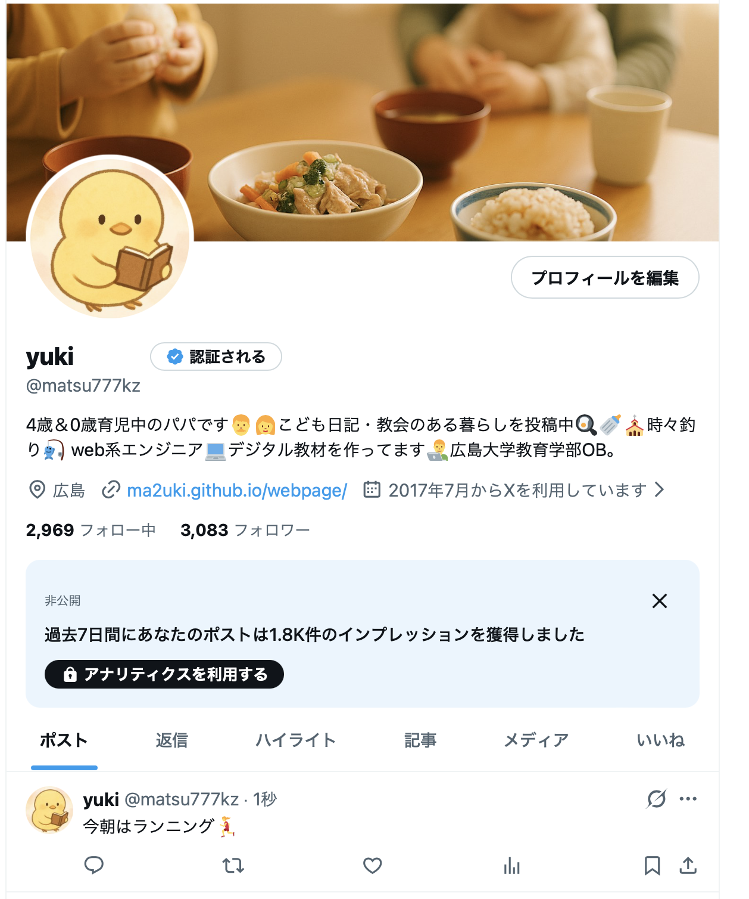

yuki
広島県在住の２児の父です👨👩 職業はエンジニア🧑💻
趣味は魚釣り。広島大学教育学部OB。
日曜日は教会に通っています🚗
Full-Stack Developer
Full-Stack Web Developer.
I build modern, end-to-end web applications—from UI design to server logic.
Primary Stack:
- Front-end: Vue.js, Vuetify
- Back-end: C#
- Others: HTML, CSS, JavaScript (Personal projects include responsive sites and simple games.)
activity
最新のプライベートワークはInstagramをチェック

日常の投稿はXで発信📱
